MathPro User Engagement Report
1. Accessing the MathPro User Engagement Report

Click on MathPro User Engagement Report to view the detailed insights.
2. User Engagement Per Activity

This section provides data on different types of assigned and completed activities:
- Total Recalls Assigned vs Completed
- Total Practices Assigned vs Completed
- Total Assessments Assigned vs Completed
- Total Reviews Assigned vs Completed
2.1 Export and Explore in Excel

Steps to export data:
- Click on the three-dot menu at the top of the graph.
- Select "Export Data" from the dropdown menu.
2.2 Which Data to Export?

- Select the file format (either .xlsx or .csv).
- Click "Export" to download the file.
2.3 Total Recalls Assigned vs Completed

This graph displays data on assigned recalls versus completed recalls within the selected period.
2.4 Total Practices Assigned vs Completed

This graph provides information on the number of practices assigned and completed year on year within the selected date range.
2.5 Total Assessments Assigned vs Completed

This graph provides information on the number of assessments assigned and completed year on year within the selected date range.
2.6 Total Reviews Assigned vs Completed

This graph provides information on the number of reviews assigned and completed year on year within the selected date range.
3 Recalls

This page contains the following information
- Percentage of Unique Recall Takers Vs Active Students
- Variation in % Recalls Completed vs Active Students (compared to previous year)
- Frequency Distribution Recalls Completed
3.1 Percentage of Unique Recall Takers Vs Active Students
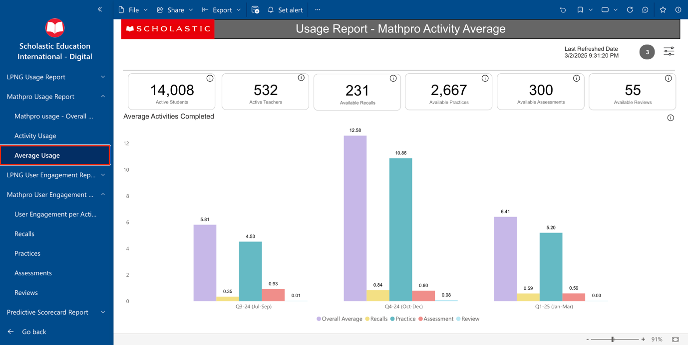This graph provides information on the percentage of unique recall takers compared to active students for the selected year, the previous year, and the year before that.
3.2 Variation in % Recalls Completed vs Active Students
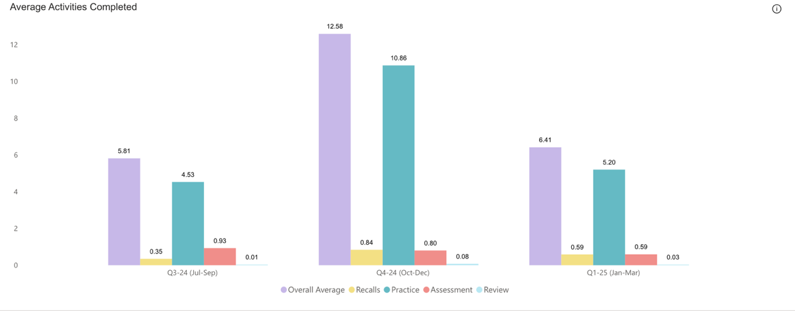This graph shows the percentage growth or decline in active students (blue line) and recalls completed (purple line) in a specific month compared to the same month in the previous year.
3.3 Frequency Distribution Recalls Completed
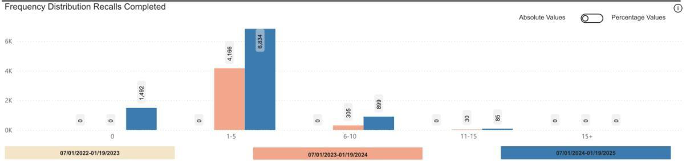This graph shows the total count of students who have completed 0, 1-5, 6-10, 11-15, and 15+ recalls within the selected date range. It also compares this data with the previous two years for the same period, with an option to toggle for percentage.
4 Practices
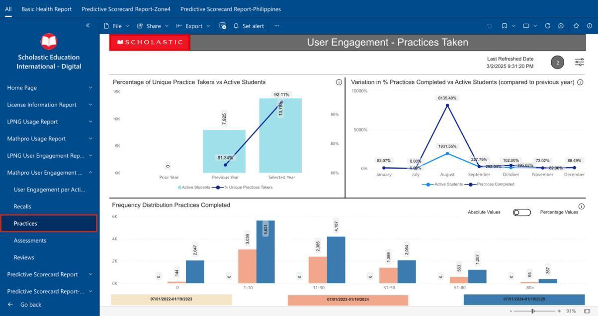This page contains the following information
- Percentage of Unique Practice Takers Vs Active Students
- Variation in % Practice Completed vs Active Students (compared to previous year)
- Frequency Distribution Practice Completed
4.1 Percentage of Unique Practice Takers Vs Active Students
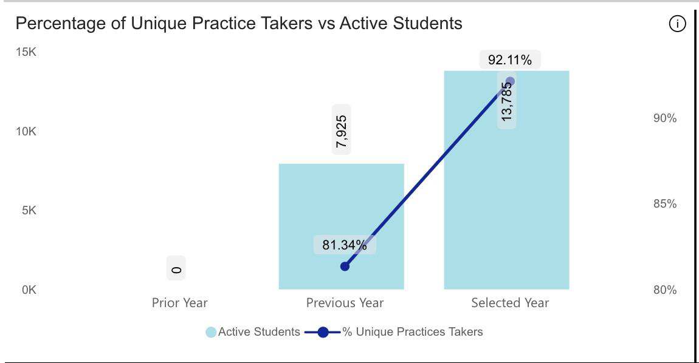This graph provides information on the percentage of unique practice takers compared to active students for the selected year, the previous year, and the year before that.
4.2 Variation in % Recalls Completed vs Active Students
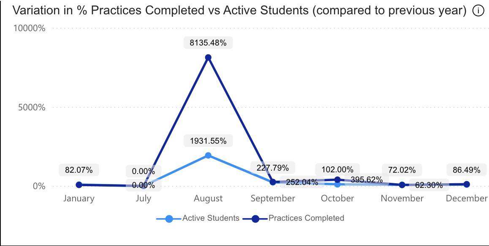This graph shows the percentage growth or decline in active students (blue line) and practices completed (purple line) in a specific month compared to the same month in the previous year.
4.3 Frequency Distribution Practices Completed
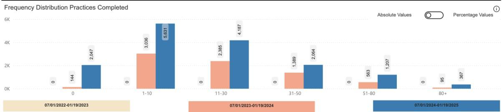This graph shows the total count of students who have completed 0, 1-5, 6-10, 11-15, and 15+ practices within the selected date range. It also compares this data with the previous two years for the same period, with an option to toggle for percentage.
5 Assessments
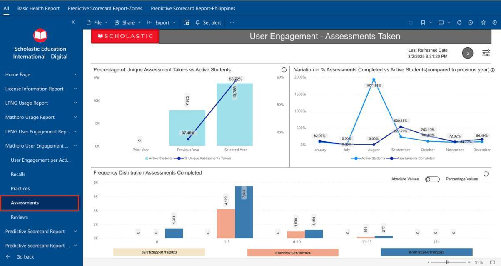This page contains the following information
- Percentage of Unique Assessment Takers Vs Active Students
- Variation in % Assessment Completed vs Active Students (compared to previous year)
- Frequency Distribution Assessment Completed
5.1 Percentage of Unique Assessment Takers Vs Active Students
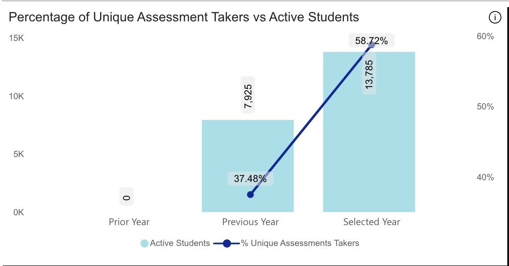This graph provides information on the percentage of unique assessment takers compared to active students for the selected year, the previous year, and the year before that.
5.2 Variation in % Assessment Completed vs Active Students
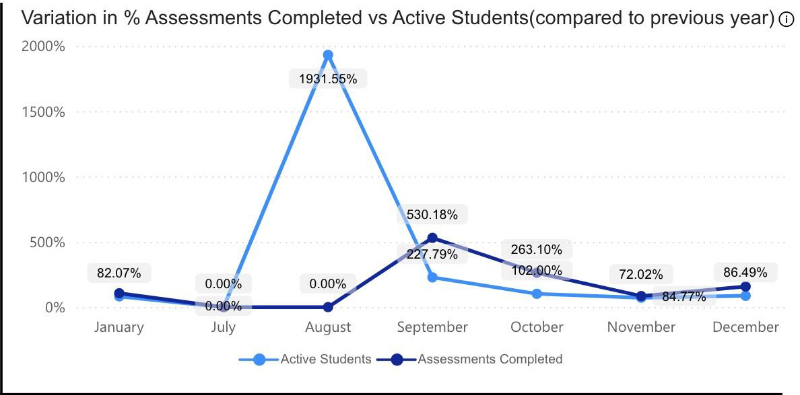This graph shows the percentage growth or decline in active students (blue line) and practices completed (purple line) in a specific month compared to the same month in the previous year.
5.3 Frequency Distribution Practices Completed
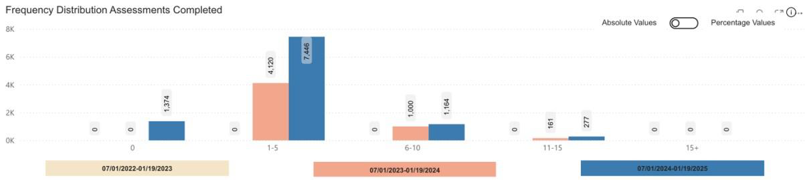This graph shows the total count of students who have completed 0, 1-5, 6-10, 11-15, and 15+ practices within the selected date range. It also compares this data with the previous two years for the same period, with an option to toggle for percentage.
6 Reviews
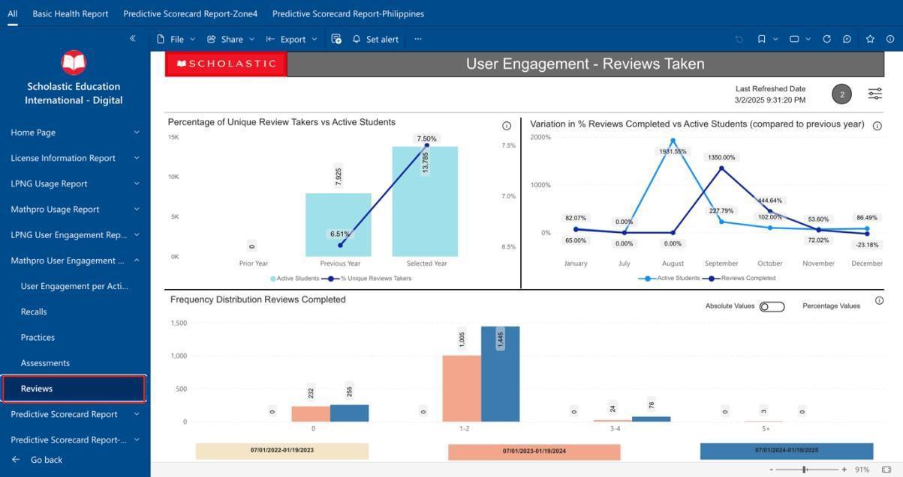This page contains the following information
- Percentage of Unique Review Takers Vs Active Students
- Variation in % Review Completed vs Active Students (compared to previous year)
- Frequency Distribution Review Completed
6.1 Percentage of Unique Review Takers Vs Active Students
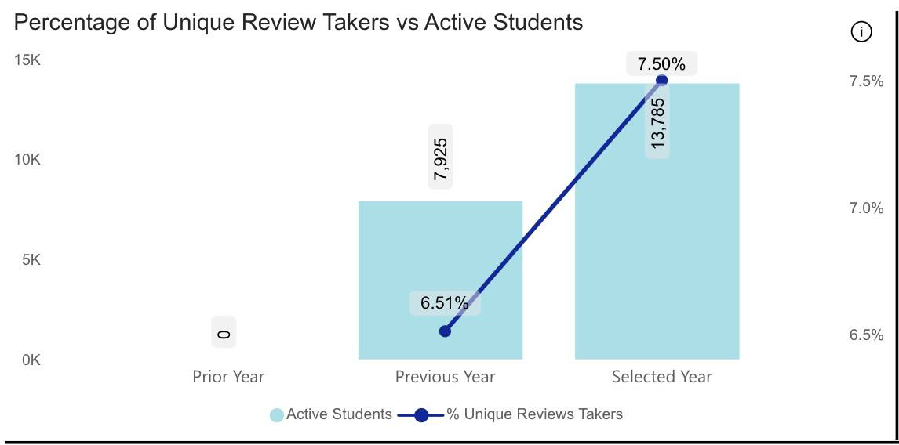This graph provides information on the percentage of unique review takers compared to active students for the selected year, the previous year, and the year before that.
6.2 Variation in % Review Completed vs Active Students
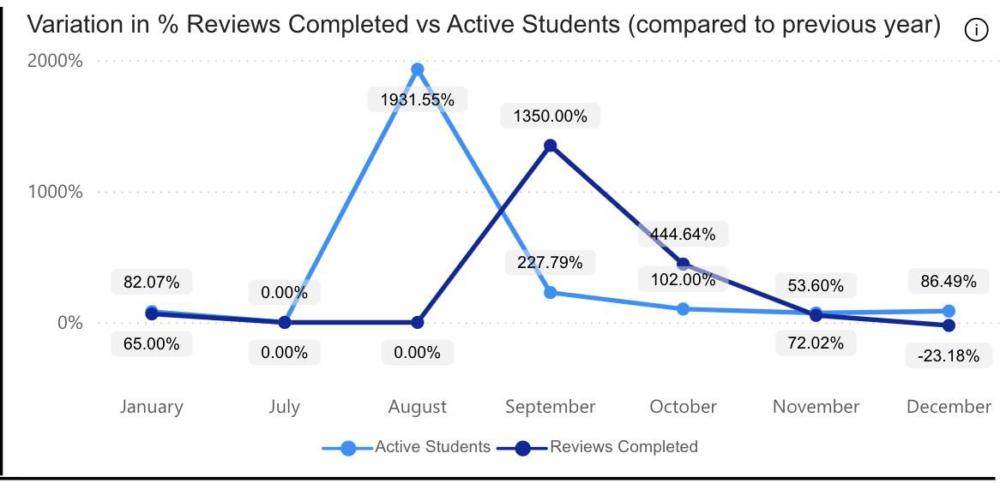This graph shows the percentage growth or decline in active students (blue line) and reviews completed (purple line) in a specific month compared to the same month in the previous year.
6.3 Frequency Distribution Reviews Completed
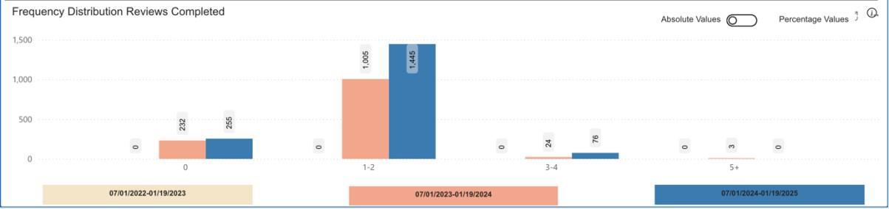This graph shows the total count of students who have completed 0, 1-2, 3-4, 5+ reviews within the selected date range. It also compares this data with the previous two years for the same period, with an option to toggle for percentage.